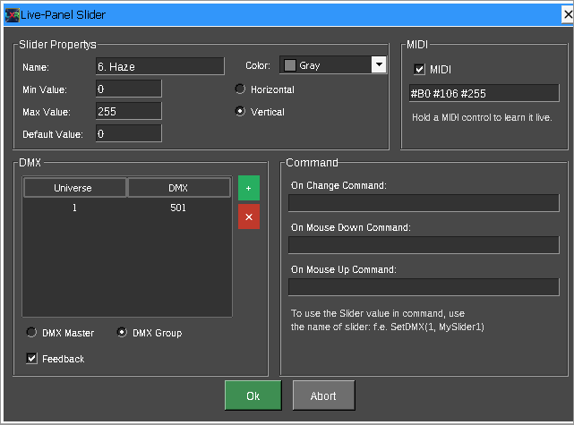

For: FullPlayer
A slider of the Live panel sets DMX channels, the speed of a button, or runs commands with its value. Press it anywhere on its track, or drag it: the handle goes there. While it moves, its value is shown on the handle for two seconds and the mouse pointer is hidden (Show value in slider when moving it, in the Option tab).
A right click on a slider opens Live-Panel Slider. Ok applies the changes to the open project, Abort leaves the slider as it was.

The settings of the slider 6. Haze: a DMX Group slider on universe 1, address 501, with Feedback and a MIDI fader.
| Part | What it holds |
|---|---|
| Slider Propertys | The Name (commands use it), the range (Min Value, Max Value), the Default Value - where the slider stands when the project opens -, its Color and Horizontal / Vertical. |
| MIDI | A fader of a controller. Tick MIDI and move the fader: it is learned at once (Hold a MIDI control to learn it live). |
| DMX | The channels of the slider: Universe and DMX (the address), added with + and taken away with x. Then DMX Master or DMX Group, and Feedback (below). |
| Command | On Change Command - run each time the slider
moves; On Mouse Down Command - when it is pressed; On Mouse Up
Command - when it is let go. A command or a macro's name; in it, the slider's name stands for its value, as
in SetDMX(1, MySlider1). |
setSeqSpeed(Button, Slider): it sets the speed of
that button, 100 being its own speed (the page Speeds of Andrei_edit is made of such
sliders).setOffset(1, 10, MySlider) adds
it to channel 10 of universe 1. In Andrei_edit the slider offsetPanBeam runs the macro
PanBeamoffset, one setoffset line for the pan channel of each beam
(offsetTiltBeam the same for the tilt).